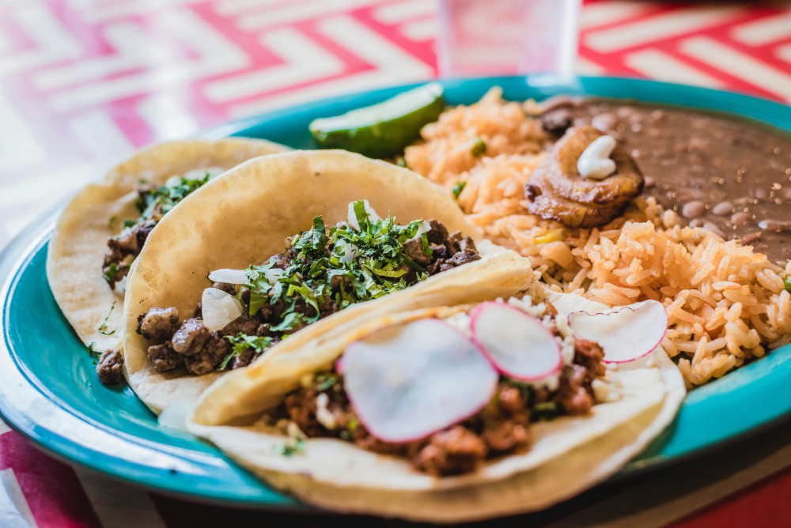

Tacos Recipe

Description
Tacos lovers, where you at? If you enjoy eating
tacos and you want an easy, homemade recipe,
look no further! Below is a recipe to make Tacos de asada!
Ingredients
- 1 recipe carne asada
- 2 avocados
- 3 tbsp cotija cheese
- 1/3 cup onion
- 1/2 cup fresh cilantro
- 6 tortillas
- limes
Steps
- Grill the carne asada until it's cooked to your
preference. Slice it against the grain, then
chop it into small pieces.
- Use a spoon to mash the avocado and spread a large
spoonful or two onto each tortilla. Then, top the
avocado with chopped carne asada, a sprinkle of
cotija cheese, some diced onion and fresh cilantro.
Squeeze fresh lime juice on top.
Home